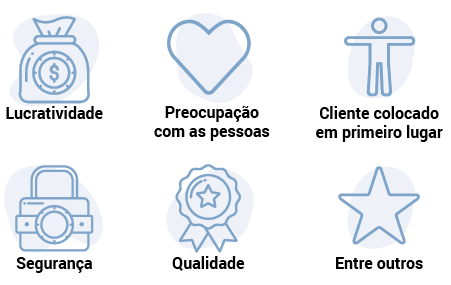

Quando se fala sobre cultura, é importante compreender alguns conceitos. Para isso, observe o que dizem alguns autores sobre o assunto.
Chiavenato (2004) afirma que a cultura se assemelha a um iceberg, em que apenas uma pequena parte, em torno de 10% a 20%, fica visível. O restante fica oculto, sem que se possa enxergar.
Com a cultura organizacional nas empresas ocorre da mesma forma: ficam aparentes os aspectos formais, as políticas organizacionais, as regras, as normas, os padrões, a tecnologia utilizada. Em contrapartida, os aspectos mais relacionados aos sentimentos, às atitudes e aos valores que os grupos realmente valorizam, os chamados aspectos informais, ficam invisíveis, escondidos.
Pires e Macedo (2006) explicam que a cultura pode ser definida como uma das principais características relacionadas ao desenvolvimento das relações interpessoais entre os membros que atuam em determinada organização, sendo a capacidade de adaptação do indivíduo ao meio no qual esteja inserido.
Segundo Silva e Zanelli (2004), a cultura organizacional pode ser entendida como um conjunto de hábitos e crenças, estabelecido por meio dos valores, das normas e das atitudes partilhados por todos os membros de determinada organização.
Portanto, esse conjunto de hábitos, normas e crenças é oriundo e determinado pelos idealizadores iniciais das organizações, por meio do modo como pensam e expressam seus sentimentos e atitudes.
Para que você compreenda melhor, serão abordados os elementos que compõem a cultura.
Todas as empresas são constituídas por um sistema de valores, que as diferencia umas das outras, chamado de cultura organizacional. Para gerarem lucros e continuarem sendo competitivas nos mercados em que atuam, as empresas precisam exercer o trabalho em equipe, definindo o espaço de cada colaborador para que não existam conflitos desnecessários. Neste contexto, cada um tem o seu papel na engrenagem chamada organização.
Essa engrenagem precisa ser administrada e gerenciada, e, para isso, existem quatro elementos que podem ser considerados os mais importantes, os quais s√£o:
Examine agora os conceitos de cada um desses elementos e qual a sua importância para que a organização funcione adequadamente e atinja um dos seus principais objetivos, qual seja, o lucro.
É composta pelas características, como normas, crenças e valores, que devem ser conhecidas por todos os membros da organização. É o modo pelo qual a empresa se organiza, por meio dos recursos disponíveis, para buscar os seus objetivos. A estratégia define o rumo que a empresa deverá tomar, sendo geralmente definida pelos gestores e tomadores de decisões com o apoio de suas equipes.
Pode-se entender que a tecnologia é composta por todas as ferramentas disponíveis que resultam em entregas rápidas e eficientes dos produtos ou serviços. Essas ferramentas podem ser compreendidas como os processos programados pelos gestores e responsáveis, incluindo as capacitações dos colaboradores e a implantação de novos sistemas necessários para o atingimento das metas e dos objetivos. Dessa forma, tudo o que possibilita acelerar os processos, tornando-os mais ágeis, eficientes e benéficos para todos os stakeholders, pode ser chamado de tecnologia. É o meio pelo qual a empresa apresenta as mudanças de processos e realiza as comunicações necessárias, e pode ser conhecido como a inteligência artificial.
Refere-se a como a empresa direcionará suas atividades junto aos mercados em que atua. Quando se fala em estrutura, não se faz referência somente a um organograma, aos prédios, às instalações ou aos maquinários. Tudo isso é muito importante, mas o principal é a maneira pela qual a empresa utilizará todos esses recursos para buscar os seus objetivos. A utilização adequada da estrutura deve estar alinhada às estratégias organizacionais.
É importante reforçar que as pessoas são o principal ativo das organizações atualmente. As empresas não existiriam se não fossem as pessoas, por isso a importância de manter estas motivadas e informadas. São as pessoas que executam e controlam as atividades e os processos, e também consomem e utilizam os produtos e serviços feitos por elas nas empresas. O que se investe nas pessoas não pode ser considerado gasto, e sim, como o próprio nome já diz, investimento. Somente pessoas realizadas poderão trazer os lucros que as empresas esperam e buscam incansavelmente.
O nascimento de uma cultura organizacional direcionada para a valorização das pessoas pode ser claramente identificado no exemplo apresentado a seguir.
Figura 1 – Sócios empresa Engage
Fonte: COSTA, 2017.
A imagem apresenta uma foto com 18 sócios da Engage em um momento de informalidade, descontração e trabalho em rede para o empoderamento social.
A Engage é uma jovem empresa que tem como objetivo desenvolver softwares com o caráter de inovação social (social change). Bastante enxuta, com apenas 15 profissionais, mas com uma imensa conexão, a empresa trabalha com uma reduzida hierarquia e com alinhamento às suas crenças pessoais.
A empresa trabalha baseada no conceito de lean startup (uma cultura amplamente difundida no Vale do Silício) e apresenta como elementos da cultura a confiança, cocriação, colaboração e a produção colaborativa (crowdsourcing). Um dos sócios da empresa, Tomás de Lara, afirma: “somos um negócio emergente, de atuação em rede, com alta valorização do capital social”. Criar vínculos de interação e de confiança é a base dos negócios, reforçando a ideia de conexão entre as empresas e as pessoas.
Estes quatro elementos, se bem administrados, ordenados e agrupados, farão parte da inteligência e da competitividade das organizações, sendo fundamentais para o desenvolvimento gerencial, bem como de suas equipes, tendo como consequência o atingimento dos objetivos organizacionais.
Para ampliar seus conhecimentos sobre o assunto, pesquise o título Zappos company culture, no YouTube.
A cultura das organizações é formada também pelos componentes que serão abordados a seguir.
Segundo Marras (2000), os valores podem ser definidos como as crenças que moldam uma organização ou um grupo, e estão relacionados a padrões de comportamento, de avaliação e de imagem. Os valores determinam as atitudes das pessoas e dos líderes, e também o caminho que a organização deverá seguir.
Alguns exemplos de valores s√£o:
Cada empresa define o que tem mais valor na organização.
Segundo Maximiano (2010), as empresas não seguem o mesmo padrão, pois cada uma tem as suas características relacionadas a estilo, arquitetura, estrutura, utilização dos espaços, arranjo físico, entre outros. Algumas empresas têm ambientes mais formais, enquanto outras adotam ambientes informais e com mais liberdade.
Além disso, o modo de vestir dos colaboradores, o tipo de tecnologia utilizada, o emprego ou não de uniformes demonstram se a empresa é mais clássica, conservadora ou moderna. Todas essas informações podem ser chamadas de artefatos da cultura organizacional.

Um exemplo de empresa moderna e informal e que está no topo da lista de melhores companhias para se trabalhar em se tratando de clima organizacional é o Google. A empresa pode ser identificada como referência para várias outras organizações.
No infográfico a seguir, é possível identificar com clareza os importantes ensinamentos sobre a cultura organizacional do Google.
Figura 2 – Cultura organizacional do Google
Fonte: <https://www.siteware.com.br/blog/gestao-de-equipe/cultura-organizacional-do-google/>.
O infográfico descreve sete ensinamentos da cultura organizacional da empresa Google. São eles: “Mude sua forma de contratar”, “Utilize as análises do RH”, “Deixe claras as missões e valores da empresa”, “Seja transparente e horizontal nas relações”, “Reconheça o trabalho da equipe”, “Envolva a equipe fora do trabalho” e, por último, “Desenvolva um ambiente casual”.
Veja a seguir exemplos de artefatos da cultura organizacional de uma empresa.
Apesar de a tecnologia fazer parte dos artefatos que compõem a cultura organizacional, ela tem uma importância bem mais ampla por ser o conhecimento que as pessoas detêm a respeito de determinada empresa.
A tecnologia é o conjunto de todas as informações que a empresa contém para a resolução dos problemas. Ainda conforme Maximiano (2010), as organizações que valorizam esses conhecimentos podem estar mais inclinadas para assim gerarem tecnologias mais avançadas. Alguns exemplos dessas tecnologias são a participação de novos produtos ou serviços no faturamento, a existência de um setor de pesquisa e desenvolvimento, o plano constante de treinamento e desenvolvimento de seus colaboradores, entre outros.
Esses artefatos representam a identidade da empresa, o seu DNA (ácido desoxirribonucleico). Maximiano (2010) afirma que os comportamentos e objetos disseminam informações e significados, tais como cerimônias, imagens, hábitos. Entre os exemplos de cerimônias e hábitos estão as festas de final de ano, nas quais os colaboradores com um certo tempo de empresa são homenageados; as premiações por metas atingidas; as comemorações de aniversariantes do mês ou da eleição dos melhores funcionários do mês com relação a vendas, entre outros. Nesse sentido, vale muito a criatividade das empresas e os colaboradores agradecem.
Estes artefatos representam as práticas das empresas para reforçar a cultura e dar continuidade a ela, como o café da manhã com o presidente, a apresentação dos novos colaboradores ao grupo ou as festas de final de ano. Ainda são exemplos os modos de admissão ou demissão dos colaboradores e como eles são promovidos. Para qualquer situação, a empresa poderá criar esses rituais, mas é importante que não sejam esquecidos a fim de que não causem desmotivação nos grupos.
Nas organizações, tudo que faz parte do imaginário são mitos e podem servir para guiar o comportamento das pessoas. Exemplo disso é quando a empresa sempre salienta e reforça que todos fazem parte de uma grande família, o que acaba criando a sensação de que aquele vínculo é eterno. Reforça Marras (2000) que frases como “aqui sempre foi assim e não vai mudar” também desenvolvem uma impressão que é sentida por todos e, por consequência, grande parte dos colaboradores prefere não expressar suas opiniões.
De acordo com Marras (2000), os tabus orientam os comportamentos e as atitudes. Alguns desses tabus surgem como as proibições e o que não é bem visto na organização. Os preconceitos são outros bons exemplos, representados na discriminação pela raça, religião, opção sexual, idade ou preterição por contratar pessoas do sexo feminino, entre outros. Os tabus têm muito a ver com os fundadores. Aqui se encaixa perfeitamente a imagem do iceberg, cujo exemplo foi citado anteriormente: os 10% ou 20% que estão visíveis e os 80% ou 90% que ficam ocultos nas organizações.
O clima organizacional pode ser definido como a percepção dos colaboradores em relação a diversos fatores que permeiam o dia a dia nas organizações.
Assim, é possível perceber que existe uma forte relação entre clima e cultura organizacional, uma vez que são fatores que se complementam. A cultura pode ser percebida como o resultado de várias práticas realizadas ao longo de um determinado período na empresa (ao longo de sua história). Já o clima organizacional se refere ao estado de ânimo dos profissionais em um determinado momento e está intimamente ligado ao ambiente interno da empresa.
Um dos fatores que mais contribuem para que o clima organizacional seja positivo é a motivação dos profissionais, isto é, da equipe. Fatores como satisfação, felicidade, respeito e reconhecimento são fundamentais para que o clima seja positivo, para que haja boa produtividade e engajamento e, consequentemente, para que a empresa obtenha bons resultados.
Profissionais engajados se sentem parte do negócio, ou seja, do propósito, produzindo além do que é esperado, sendo comprometidos, dedicados e entendendo a missão da empresa.
Veja o exemplo de uma empresa para ilustrar a afirmação anterior:
Com o objetivo de aumentar o engajamento da equipe e promover melhorias, frequentemente as empresas investem em ações de endomarketing. Conheça a Mapah, uma instituição que trabalha com a prestação de serviços de auditoria, assessoria contábil e assessoria jurídica.
A empresa Mapah, por meio da coordenadora de recursos humanos, Darlene Carvalho, desenvolveu ações que envolveram festas de confraternização, eventos esportivos, realização de games sobre ética e valores da empresa e gincanas de doações de agasalho.
Figura 3 – Mapah e fortalecimento da cultura
Fonte: <https://blog.ipog.edu.br/gestao-e-negocios/inspirando-carreiras-clima-organizacional-da-mapah/>.
A imagem mostra a coordenadora de recursos humanos, Darlene Araújo de Carvalho, de braços cruzados, sorrindo, vestindo blazer azul e camiseta branca à esquerda da imagem; ao fundo, uma parede em textura de tijolinhos e com o logo da empresa Mapah em letras em azuis.
Após a implantação dessas ações, foi possível perceber que ocorreu um aumento na integração dos colaboradores, melhorando significativamente o clima organizacional, tornando-o mais leve e descontraído e, consequentemente, contribuindo para o fortalecimento da cultura.
Outro importante fator que impacta a rotina de trabalho é o soft skills (termo em inglês utilizado pelas organizações para definir características comportamentais). Com o objetivo de se tornar um diferencial competitivo, as empresas buscam desenvolver nos colaboradores suas habilidades comportamentais, mentais e sociais, assim como a inteligência emocional, para que possam tornar o ambiente de trabalho dinâmico, favorecendo a maximização de resultados.
Cada vez mais, o mercado de trabalho exige que os profissionais da √°rea cont√°bil estejam preparados, atualizados e qualificados.
Além da qualificação, a postura ética do profissional, pautada em valores e princípios adequados, corroboram significativamente a construção de uma cultura organizacional focada na transparência e na retidão.
Segundo Handel (2000, p. 67), a ética profissional é baseada em:
Responder a seus deveres com respeito a si mesmo e aos outros, no uso da liberdade.
Considerar que as pessoas s√£o iguais em direito e dignidade.
Agir de acordo com a natureza daquilo que se conhece sem deturp√°-lo pela mentira, inj√∫ria, cal√∫nia, hipocrisia.
Considerar-se indivíduo de direitos e deveres.
Obedecer ao princípio da interdependência entre os membros de um grupo, realizando intercâmbio de compreensão e apoio.
Diante desta conduta, o profissional tem forte influência sobre grupo, empresa e sociedade, e sua confiabilidade torna-se referência. O profissional da área contábil é detentor de informações confidenciais, sendo assim, precisa ter compromisso no exercício de suas atividades, mantendo sua conduta moral. Essa conduta respeitosa, com integridade, objetividade e sigilo, contribui significativamente para a construção e permanência de uma cultura organizacional que evidencia a promoção da confiança.
Desta forma, percebe-se que a conduta do profissional da área contábil está diretamente ligada à cultura organizacional, uma vez que suas ações acabam repercutindo social e economicamente.
A busca desenfreada pela maximização de resultados jamais deve fomentar dribles às burocracias e à lei em detrimento de interesses alheios aos do Fisco, por exemplo. Camuflar informações, burlar leis, ocultar ou não apresentar veracidade na tomada de decisões são ações que corroboram para a construção de uma cultura organizacional que compromete não só a imagem de profissional da área contábil como também da própria organização.
Para que você, futuro técnico em contabilidade, conheça melhor as organizações de um modo geral, é importante frisar que todas têm características próprias. Assim como o ser humano, cada uma tem a sua singularidade, um sistema único com normas, regras, padrões, bem como maneiras diferentes de resolver situações.
A cultura, portanto, pode ser comparada ao DNA, pois, mesmo em um contexto de matriz e filiais da mesma organização, com regras, normas, procedimentos definidos e mesmo dono, as organizações apresentarão as suas diferenças.
 Tecnologia
Tecnologia Estrutura
Estrutura Pessoas
Pessoas Verdade
Verdade